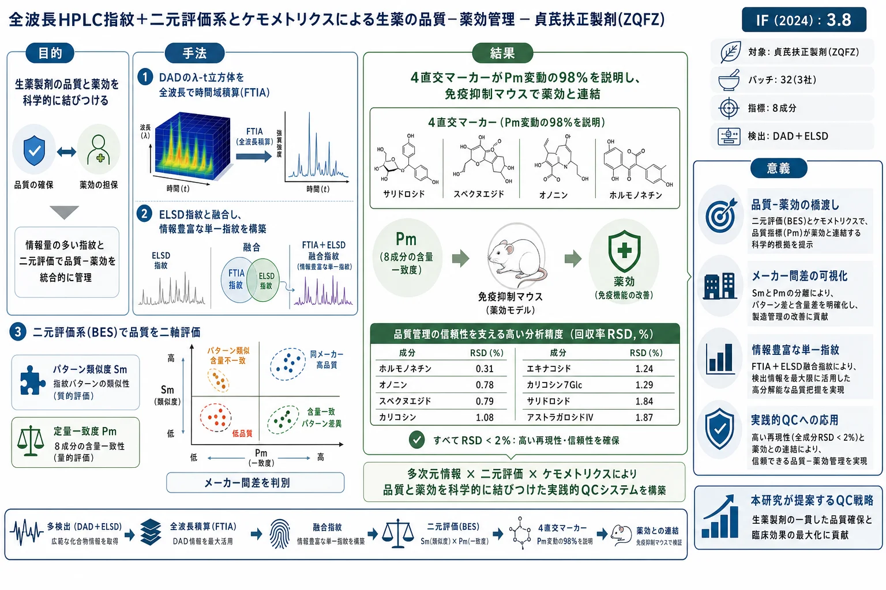
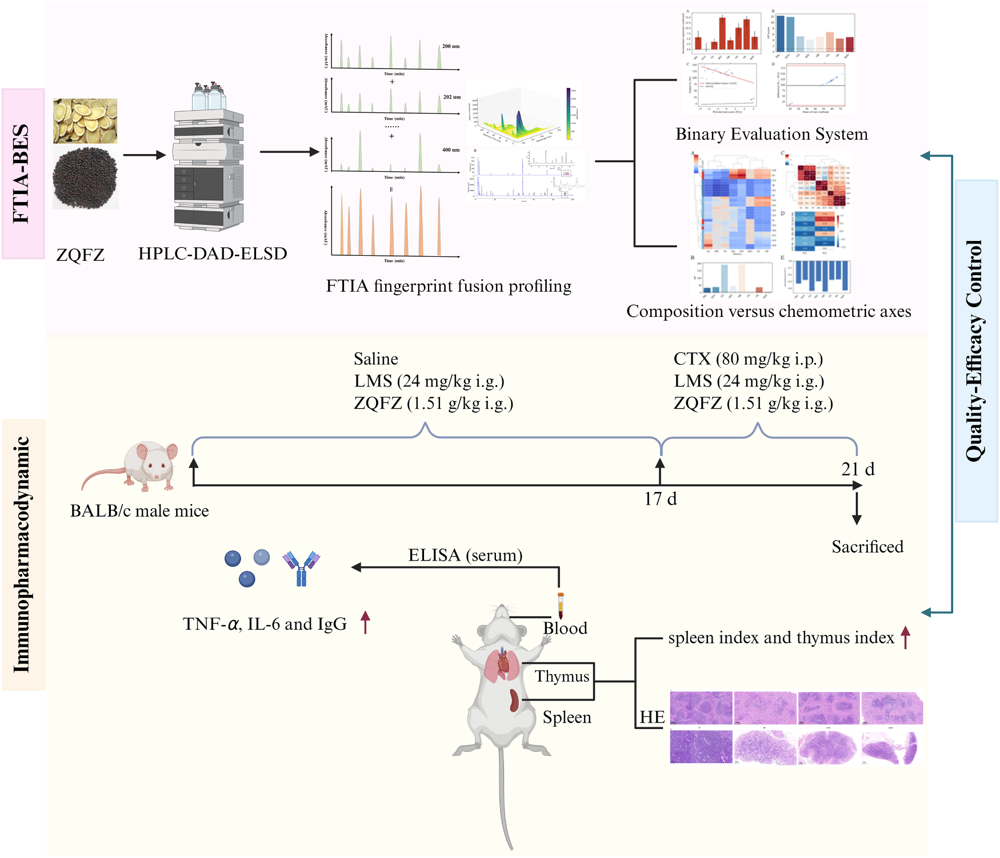
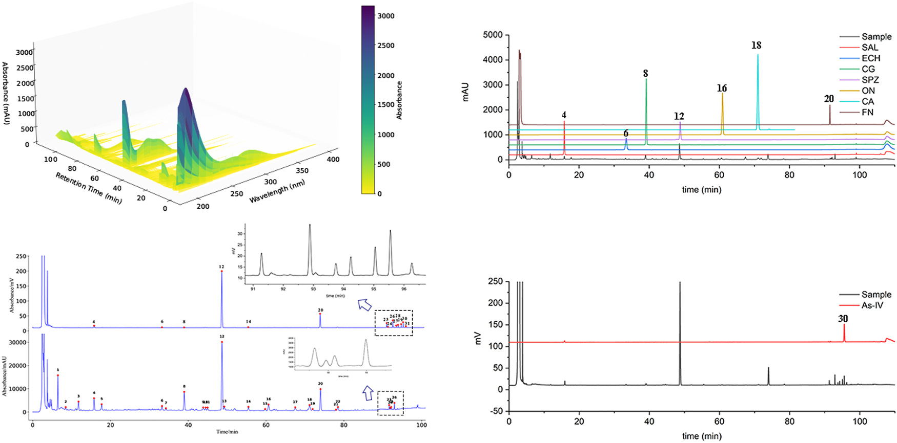
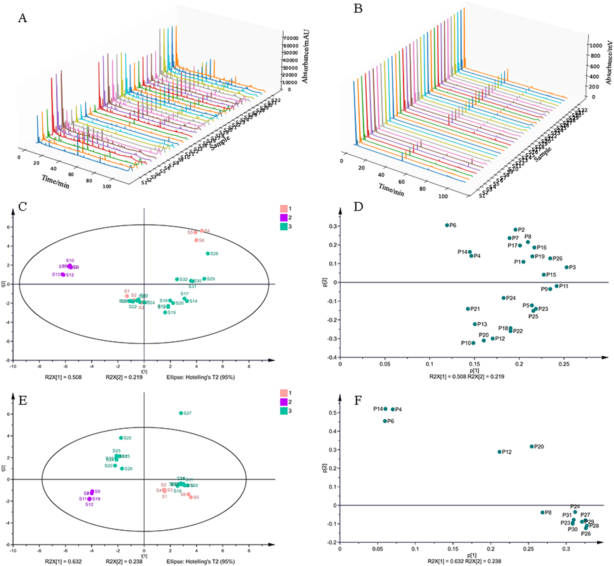
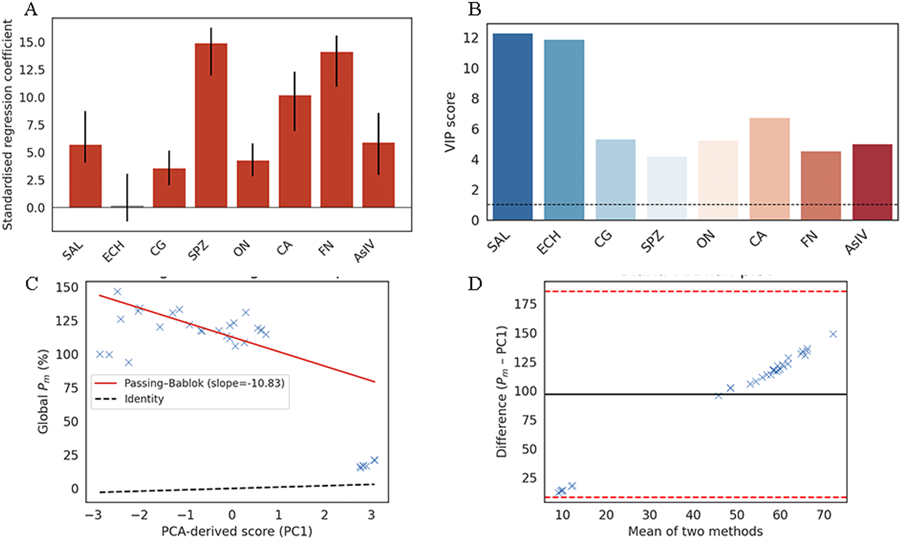
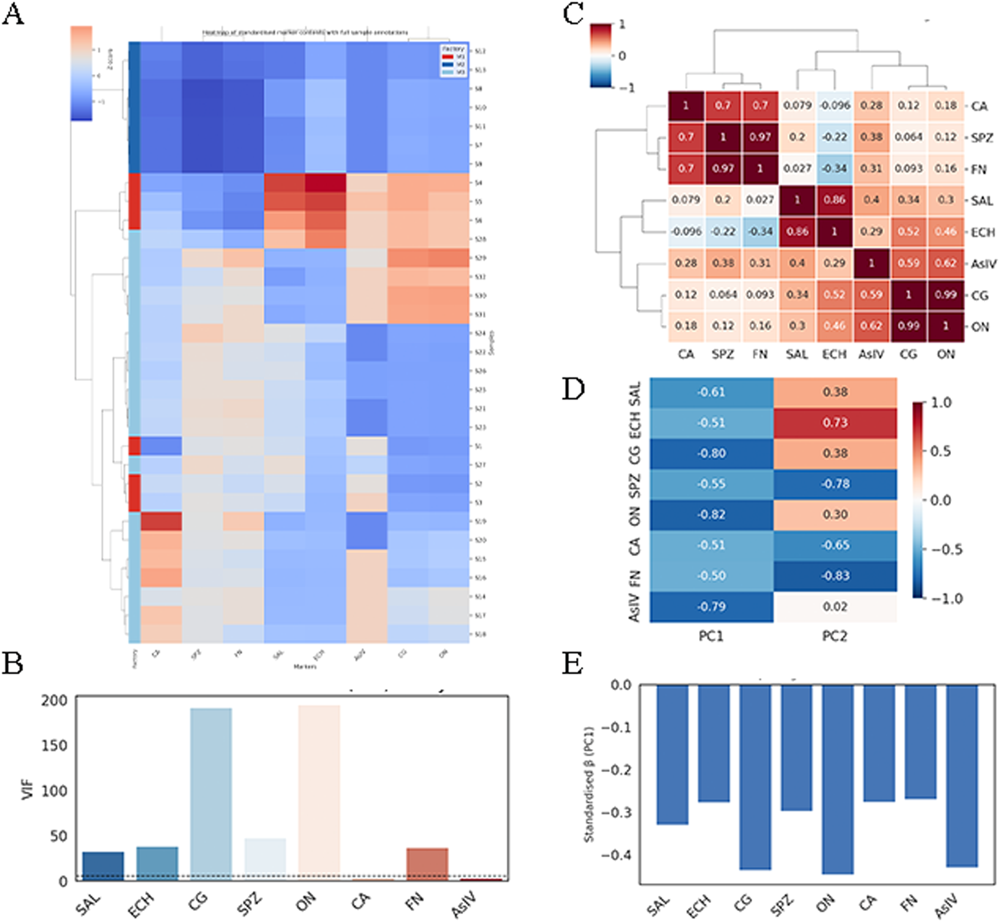
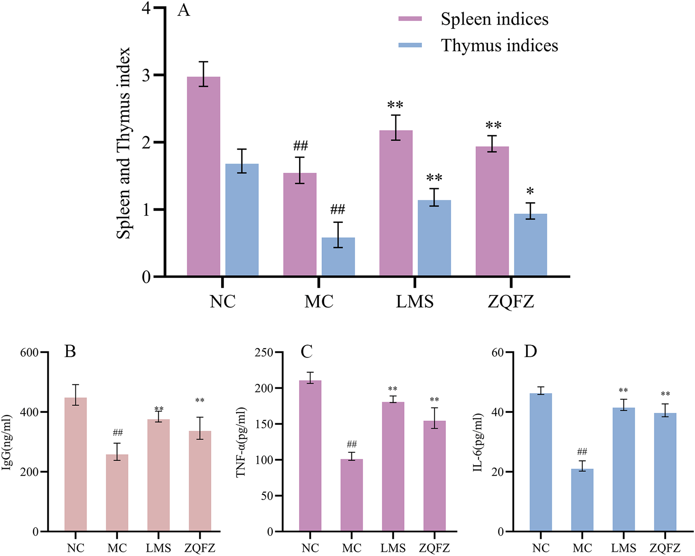
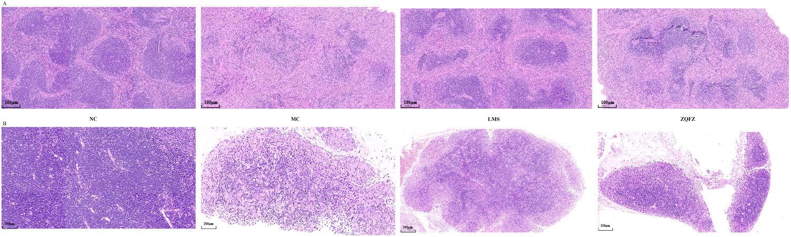

全波長HPLC指紋＋二元評価系とケモメトリクスによる生薬の品質−薬効管理 — 貞芪扶正製剤(ZQFZ)

<!-- 方針: ほぼ全訳＋必要に応じた補足。原文構成に沿って訳出。「> 補足:」は訳者注。 -->
書誌情報
- 原題: Full-spectrum HPLC fingerprint with binary evaluation system and chemometrics for herbal medicine quality-efficacy control
- 著者: Lidan Wu, Jing Yan, Jiangshan Hu, Daoran Pang, Yuting Ji, Dandan Gong（山東中医薬大学薬学研究所 ほか, 中国。Wu・Yanは共同筆頭）
- 掲載: Journal of Chromatography A 1761 (2025) 466399. https://doi.org/10.1016/j.chroma.2025.466399
- インパクトファクター: 約3.8（Journal of Chromatography A, JCR 2024 / Clarivate。報告により3.8〜4.2）
- 受理経過: 受領 2025-08-04 / 改訂 2025-09-11 / 採録 2025-09-20
補足: ZQFZ = 貞芪扶正製剤（Zhenqi Fuzheng Preparation。黄耆・女貞子主体の免疫調節製剤で、がん化学・放射線療法の補助等に用いられる）。FTIA = 全波長時間域積算。BES = 二元評価系(Sm=パターン類似度、Pm=定量一致度)。DAD=ダイオードアレイ検出、ELSD=蒸発光散乱検出。本論文は分析法開発＋in vivo薬効検証の研究論文。
要旨（Abstract）
多生薬製剤の従来クロマト指紋は、DADのλ-t立方体を1〜2波長に縮約してしまい、弱UV/非UV成分を隠して厳密な品質管理の価値を損なう。本研究では、より包括的でルーチン向きの 全波長時間域積算(FTIA) 戦略を開発し、DAD立方体の各ボクセルを数値積分してELSDトレースと融合した情報豊富な単一指紋を生成した。3社由来 32バッチの貞芪扶正製剤(ZQFZ) をプロファイルし、コサイン指標の等重みバイアスを克服するため、パターン類似度(Sm)と定量一致度(Pm)を分離する 二元評価系(BES) を設計。主成分分析(PCA)と組み合わせると、従来の単一波長指紋では区別できなかったメーカー間クラスターを明瞭に分離した。BESはこの差を定量化し、あるメーカーは数種のフェニルエタノイド配糖体が 10分の1の不足(Pm 3–21%)、別のメーカーは系統的な富化(Pm > 120%)を示した。PLS回帰は Pm変動の98% を4つの直交マーカー(サリドロシド・スペクヌエジド・オノニン・ホルモノネチン)に帰属させた。マーカー豊富なバッチは、シクロホスファミド(CTX)誘発免疫抑制マウスで脾臓・胸腺指数を回復させ、血清IgG・IL-6・TNF-αをベースラインの 85–95% に正常化し、化学から薬効への直接的連関を支持した。FTIA＋BESは網羅的化学カバレッジと生物学的指標を統合する、規制当局に優しい高分解能の品質評価戦略である。
1. 序論（Introduction）
生薬(HM)は世界人口の多くで第一選択治療であり、現代薬の約40%を着想させるが、化学的複雑さがバッチ間の安全性・有効性保証を難しくする。各国薬局方はクロマト指紋を中核的品質評価ツールとして支持し、2025年版中国薬局方は多くのHMで単一マーカー定量でなく全プロファイル比較を要求している。指紋研究は単一波長HPLC-DADから、多検出器・全波長・データ融合戦略へ移行してきた。全波長DADはλ-t立方体を保持し重なるクロモフォアの検出性を高める。本研究はDAD立方体を全波長で積算しELSDと融合(FTIA)、BESでパターンと定量を分離する。

2. 材料と方法（Materials and Methods）
2.2 HPLC-DAD-ELSD条件
- 装置: Agilent 1260 II（DAD＋ELSD）、COSMOSIL C18（250 × 4.6 mm, 5 μm）
- 移動相: A=水、B=アセトニトリル、流速 1.0 mL/min
- グラジエント: 0–2 min 5%B / 2–28 min 5–15%B / 28–56 min 15–22%B / 56–76 min 22–27%B / 76–85 min 27–35%B / 85–90 min 35–52%B / 90–95 min 52–95%B / 95–100 min 95%B / 100–110 min 95–5%B
- 注入量 10 μL、30 ℃、DADは 全波長スキャン(190–400 nm)
- ELSD: 蒸発器温度 60 ℃、ネブライザー温度 45 ℃、ガス流量 1.6 SLM
2.3 試料調製
標準品(ON・CA・ECH・SPZ・FN・As-IV・SAL・CG)をメタノールに溶解。ZQFZP粉末を70%メタノール25.0 mLに溶解し 45 kHz・30分超音波抽出、0.45 μm濾過。マウス投与用には滅菌生理食塩水で 0.15 g/mL に調製。
2.4 動物・実験計画
BALB/cマウス(SPF・雄・20 ± 2 g・6–8週)。4群(各n=6): 正常対照(NC)・陽性対照(LMS=レバミゾール 24 mg/kg)・モデル対照(MC)・ZQFZ群(1.51 g/kg)。1〜17日に毎日強制経口投与、18〜21日に CTX 80 mg/kg を腹腔内投与して免疫抑制を誘発。
2.5–2.7 評価
最終投与24時間後に脾臓・胸腺指数(臓器重量/体重)を算出。血清TNF-α・IL-6・IgGをELISAで測定(各6匹・3反復)。脾臓・胸腺をH&E染色で組織学的評価。
3. 結果と考察（Results and Discussion）
8成分の定量と方法バリデーション
8指標成分——SAL(サリドロシド)・ECH(エキナコシド)・CG(カリコシン-7-O-β-D-グルコシド)・SPZ(スペクヌエジド)・ON(オノニン)・CA(カリコシン)・FN(ホルモノネチン)・As-IV(アストラガロシドIV)。アストラガロシドIVのような弱UV/非UV成分の網羅にELSDをHPLC-DADに直列接続。回収率(RSD)は——
| 成分 | 回収率(%) | RSD(%) |
|---|---|---|
| サリドロシド SAL | 95.8–100.4 | 1.84 |
| エキナコシド ECH | 98.7–101.9 | 1.24 |
| カリコシン-7-Glc CG | 99.9–103.1 | 1.29 |
| スペクヌエジド SPZ | 99.8–101.9 | 0.79 |
| オノニン ON | 98.8–100.8 | 0.78 |
| カリコシン CA | 99.2–102.2 | 1.08 |
| ホルモノネチン FN | 100.1–100.9 | 0.31 |
| アストラガロシドIV As-IV | 95.8–100.2 | 1.87 |
FTIAとBES
FTIAは完全なDAD立方体(200–400 nm)を積算し、280 nm(π–π)・312 nm(n–π)等の吸収帯を保持。32バッチのDAD指紋とELSD指紋を構築(ELSD行列 32 × 14)。BESはコサイン指標の等重みバイアスを克服し、パターン類似度(Sm)と定量一致度(Pm)を分離。

PCAによるメーカー判別
PCAでメーカー(M1/M2/M3)が明瞭にクラスター分離(DADモデルでPC1+PC2累積72.7%)。従来の単一波長指紋では区別できなかった差を解像。BESによる定量では、あるメーカーは数種のフェニルエタノイド配糖体が10分の1不足(Pm 3–21%)、別のメーカーは系統的富化(Pm > 120%)。

指紋−薬効相関とin vivo検証
PLS回帰により Pm変動の98% が4直交マーカー(サリドロシド・スペクヌエジド・オノニン・ホルモノネチン)に帰属。CTX誘発免疫抑制マウスで、マーカー豊富なバッチは脾臓・胸腺指数を回復し、血清IgG・IL-6・TNF-αをベースラインの 85–95% に正常化、化学組成と薬効の直接的連関を示した。




4. 結論（Conclusion）
FTIA(DAD全波長立方体の時間域積算)とELSD融合により網羅的な単一指紋を構築し、BESでパターン類似度と定量一致度を分離、PCA・PLSでメーカー間差と薬効連関を解明した。FTIA＋BESは網羅的化学カバレッジと生物学的に意味のある指標を統合する、規制当局に優しい高分解能の品質評価戦略であり、複雑な天然薬の一貫生産に移転可能な手法を提供する。
補足（実務的示唆）: 「DADを1〜2波長に縮約せず全波長立方体ごと使い(FTIA)、ELSDで弱UV/非UV成分(アストラガロシドIV等)も拾う」点と、「類似度を“形(Sm)”と“量(Pm)”に分けて評価する(BES)」点が要点。2025年版中国薬局方が全プロファイル比較を求める流れに沿う。実務的には、メーカー間でフェニルエタノイド配糖体が10倍違う等の差を定量(Pm)で可視化でき、さらに薬効を担う4マーカーをPmで押さえれば品質−薬効の一貫管理に直結する。長時間グラジエント(110分)である点はルーチン適用時のスループットとの兼ね合いになる。